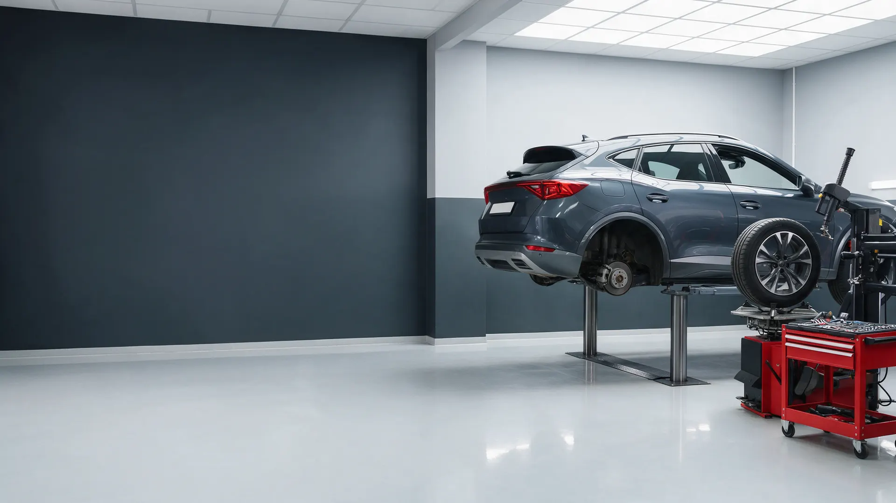
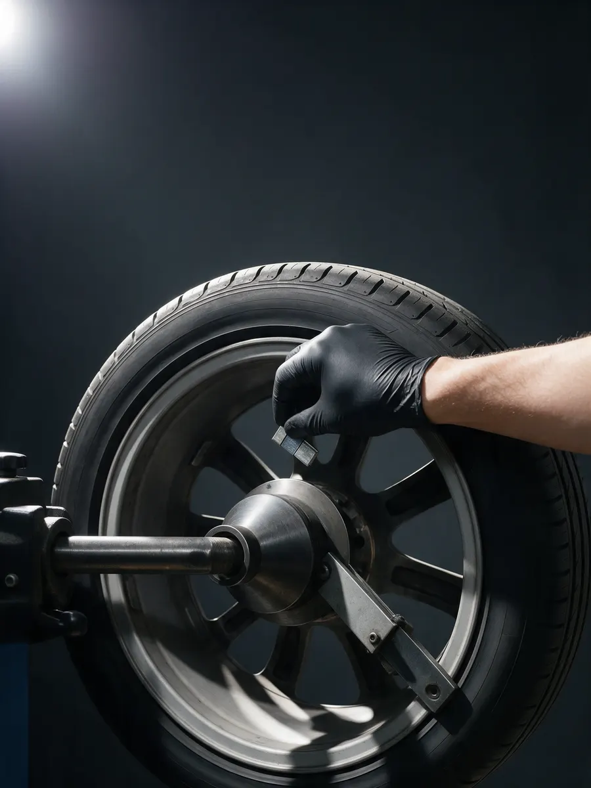
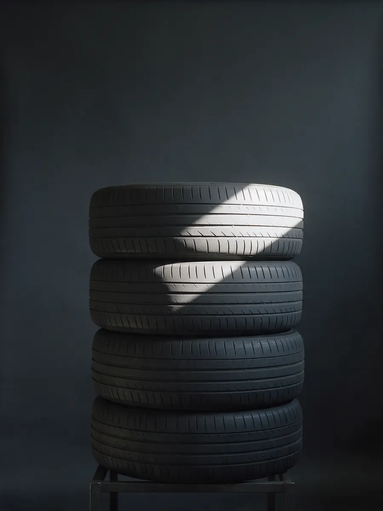
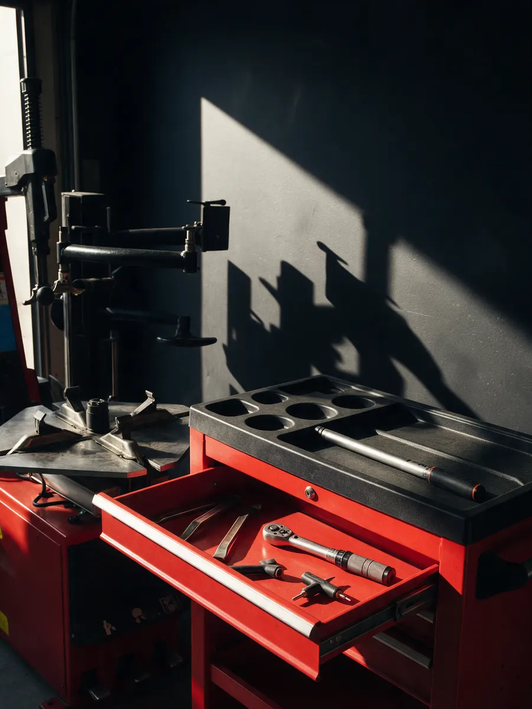

Легковые и грузовые колёса по записи
Шиномонтаж в Ижевске: легковые и грузовые колёса по записи
Записываетесь заранее, балансировка и ремонт прокола, вулканизация и гарантия. Оплата картой, СБП или наличными.
- Легковые и грузовые колёса
- Предварительная запись
- Оплата картой, СБП или наличными

Цены
Точную сумму называем при записи, по размеру колеса и виду работы.
Легковые колёса
- Шиномонтажснять, поставить, переобутьуточнить
- Балансировказа колесоуточнить
- Ремонт проколауточнить
Грузовые колёса и прочее
- Грузовой шиномонтажпо размеру колесауточнить
- Вулканизацияуточнить
- Восстановление грузовых шинуточнить
- Утилизация шинуточнить
Есть гарантия на работы – срок уточняйте при записи.
Как это проходит
- 01
Записались заранее
Пишете в мессенджер или звоните: размер колёс и что нужно сделать.
- 02
Приехали к своему времени
Мастер занят вашей машиной, а не очередью.
- 03
Переобули, отбалансировали
Ремонт прокола и вулканизация, если нужны.
- 04
Оплатили удобным способом
Картой, СБП или наличными.



Гарантии
Отзывы с Яндекс.Карт
«Достойный шиномонтаж! От легковых до грузовых колёс производят ремонт, ребята чётко знают своё дело. Цены по городу на мой взгляд ниже всех. Однозначно рекомендую данный шиномонтаж!!!»
Василь Шайхутдинов · 13 июня 2025
«Уже несколько лет меняю тут колеса на легковой машине 2 раза в год. Проблем ни разу не было. Обычно нет очереди, есть мойка колёс.»
Наиль Бариев · 23 апреля 2024
«Переобул две машины, цена вообще порадовала и мужики грамотные работают. Очень редко пишу отзывы, но тут прям заслуженно»
Artem81252 · 14 ноября 2024
Отзывы с карточки на Яндекс.Картах, без правок.
Частые вопросы
Берёте грузовые колёса?
Да, есть грузовой шиномонтаж и восстановление грузовых шин. Размеры уточняйте при записи.
Нужна ли запись?
Желательно: есть предварительная запись, приезжаете к своему времени.
Как можно оплатить?
Картой, наличными, через СБП или по QR-коду.
Какая гарантия на работы?
Гарантия на работы есть, срок уточняйте при записи.
Запишитесь на удобное время
- Адрес
- 2-я промышленная зона, Завьяловский район, Ижевск
- Часы
- Открыто до 21:00
- Телефон
- +7 (950) 838-94-28